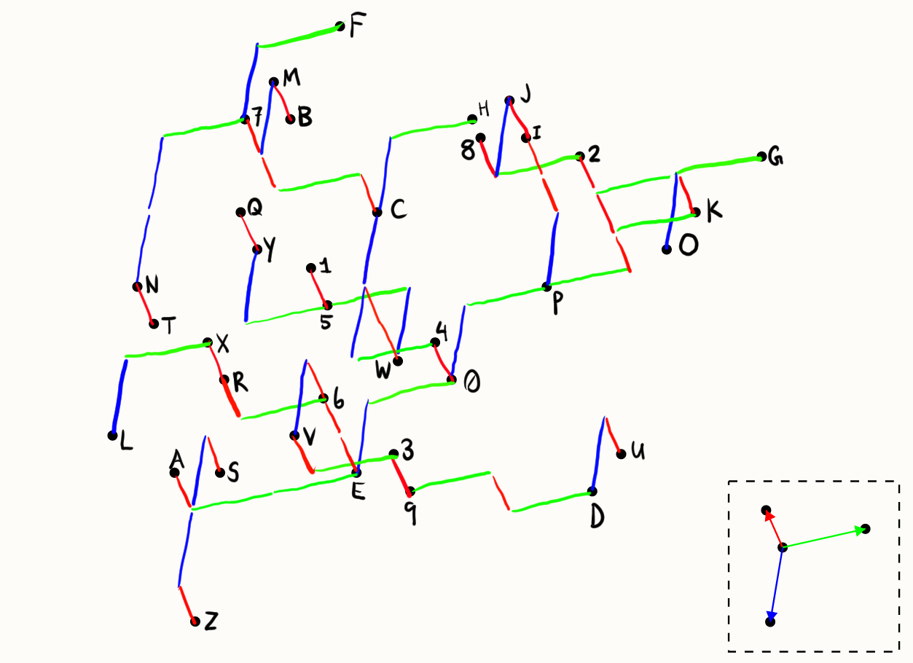
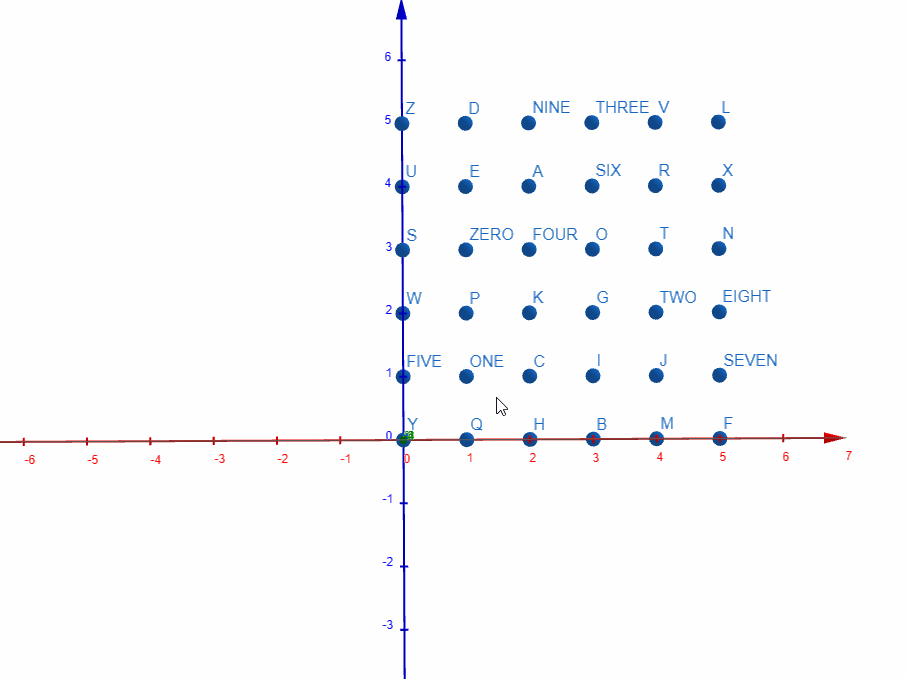

Solution: Telescope
Answer: WAKE UP
Written by Jon Schneider (additional contributions by Brian Chen, Colin Lu, Rahul Sridhar, Anderson Wang)
By solving some of the easier clues on the points, and observing that there are 36 points and 36 non-meta puzzles in the hunt, we can realize that the answer to each clue is an anagram of a puzzle answer plus a single letter (or a spelled-out digit). Each of the 26 letters and 10 digits from ZERO to NINE are used exactly once.
| Clue | Clue answer | Puzzle answer | Added letter(s) |
|---|---|---|---|
| Choice between the Devil and yours truly (9 2 2) | BEELZEBUB OR ME | BUMBLEBEE | ZERO |
| Shopping binges by some bovines (4 6) | OXEN SPREES | EXPRESS | ONE |
| The most liked microblog posts that I wrote (2 3 6) | MY TOP TWEETS | EMPTY SET | TWO |
| Yurt for geckos and crocodiles (7 3) | REPTILE HUT | TULIP | THREE |
| Someone who chops up shaving cream for you at a supermarket (4 7) | FOAM BUTCHER | MACBETH | FOUR |
| What particularly sneaky beavers might build (7 4) | FURTIVE DAMS | MUSTARD | FIVE |
| It comes before Judgement XX (3 3 3) | THE SUN XIX | HEX NUT | SIX |
| What you might use to un-tenderize some young beef (4 9) | VEAL STIFFENER | LIFE RAFT | SEVEN |
| The "3" in "<3", e.g. (5 5) | HEART DIGIT | TRIAD | EIGHT |
| Dip or spread that accompanies Middle Eastern poultry (3 6) | HEN TAHINI | HI HAT | NINE |
| Incredibly large intoxicated fish (8 7 4) | COLOSSAL DRUNKEN BASS | SKULL AND CROSSBONES | A |
| Where people research Big Macs (5) | MCLAB | CALM | B |
| What the word "hmmmmmmmmmmmmmmmmm" has (7 1'1) | COPIOUS M'S | MISO SOUP | C |
| How to address a T. rex or stegosaurus after he's married (2. 4) | MR DINO | MINOR | D |
| Everyone must eat tofu! and "Edamame is the best!", e.g. (3 7) | SOY DECREES | CROSS EYED | E |
| Fake imitation of a sharp difference (6 8) | FORGED CONTRAST | DOCTOR STRANGE | F |
| Break room for cheerleaders (3 6) | PEP LOUNGE | UNPEOPLE | G |
| A gift of meat in exchange for protection (5 7) | FLESH TRIBUTE | BUTTERFLIES | H |
| Poetry, General Nonfiction, or Drama, but not Feature Photography, Editorial Writing, or Music (3 8) | LIT PULITZER | TRIPLE LUTZ | I |
| A single nunchuck, perhaps (5 5) | NINJA STICK | SAINT NICK | J |
| Result of inserting helium into a whale's prey (9 5) | BALLOONED KRILL | ONE DOLLAR BILL | K |
| What a topiary company may hire a graphic designer to make (5 4) | SHRUB LOGO (or BRUSH LOGO) | BOROUGHS | L |
| Bit of acne on the back of one's neck (4 6) | NAPE PIMPLE | PINEAPPLE | M |
| Make dog ears in a book, perhaps (4 5) | BEND PAGES | SPEED BAG | N |
| More unusual auction units (5 4) | ODDER LOTS | TODDLERS | O |
| One holding a Granny Smith for ransom, say (5-6) | APPLE-NAPPER | PAPER PLANE | P |
| I'll give you that dock if this coin comes up heads, e.g. (4 3) | QUAY BET | BEAUTY | Q |
| Spin that woman around so she can escape (5 3 4) | SWIRL HER FREE | FERRIS WHEEL | R |
| Unhappy underling (3 6) | SAD STOOGE | GOOD EATS | S |
| Scam in a satisfying manner (3 9) | CON CONTENTLY | ONLY CONNECT | T |
| Ointment used by the church, vis-à-vis sunscreen (6 3) | HOLIER RUB | HORRIBLE | U |
| Superhero with the ability to annul things (4 3) | VOID MAN | DOMAIN | V |
| What Shrek wears when eating a lobster in his home (6 3) | SWAMPY BIB | BABY IMPS | W |
| Epipen or air purifier (7 3) | ALLERGY FIX | GALLIFREY | X |
| Certain vessel that's completely devoid of oolong or matcha (3 6) | DRY TEAPOT | TOP-RATED | Y |
| Musical pitch made by part of the stratosphere (5 4) | OZONE NOTE (or OZONE TONE) | ONE TO ONE | Z |
At the same time, the red/green/blue arrows combined with the flavortext of looking into “space” suggests that these 36 points are all located somewhere in 3-dimensional space with the axes given by the red, green, and blue arrows in the dashed box. In particular, the fact that there are many pairs of points that can be connected using exactly the red arrow suggests that they are all located at integer combinations of the red, green, and blue vectors. We can verify this by connecting all the points using copies of these three arrows, as seen below:

We can now assign integer (r, g, b) coordinates to all these points. For example, if we assign (0, 0, 0) to the point labeled Y, then the point labeled Q would have the coordinates (1, 0, 0) (because the red arrow points upwards) and the point labeled 5 would have the coordinates (0, 1, 1). Here are all the answer + letter/digit pairs and their corresponding coordinates:
| Answer | Letter/digit | Red | Green | Blue |
|---|---|---|---|---|
| TOP-RATED | Y | 0 | 0 | 0 |
| BEAUTY | Q | 1 | 0 | 0 |
| BUTTERFLIES | H | 2 | 3 | 0 |
| CALM | B | 3 | 1 | 0 |
| PINEAPPLE | M | 4 | 1 | 0 |
| DOCTOR STRANGE | F | 5 | 2 | 0 |
| MUSTARD | FIVE | 0 | 1 | 1 |
| EXPRESS | ONE | 1 | 1 | 1 |
| MISO SOUP | C | 2 | 2 | 1 |
| TRIPLE LUTZ | I | 3 | 4 | 1 |
| SAINT NICK | J | 4 | 4 | 1 |
| LIFE RAFT | SEVEN | 5 | 1 | 1 |
| BABY IMPS | W | 0 | 2 | 2 |
| PAPER PLANE | P | 1 | 4 | 2 |
| ONE DOLLAR BILL | K | 2 | 6 | 2 |
| UNPEOPLE | G | 3 | 7 | 2 |
| EMPTY SET | TWO | 4 | 5 | 2 |
| TRIAD | EIGHT | 5 | 4 | 2 |
| GOOD EATS | S | 0 | 0 | 3 |
| BUMBLEBEE | ZERO | 1 | 3 | 3 |
| MACBETH | FOUR | 2 | 3 | 3 |
| TODDLERS | O | 3 | 6 | 3 |
| ONLY CONNECT | T | 4 | 0 | 3 |
| SPEED BAG | N | 5 | 0 | 3 |
| HORRIBLE | U | 0 | 5 | 4 |
| CROSS EYED | E | 1 | 2 | 4 |
| SKULL AND CROSSBONES | A | 2 | 0 | 4 |
| HEX NUT | SIX | 3 | 2 | 4 |
| FERRIS WHEEL | R | 4 | 1 | 4 |
| GALLIFREY | X | 5 | 1 | 4 |
| ONE TO ONE | Z | 0 | 0 | 5 |
| MINOR | D | 1 | 5 | 5 |
| HI HAT | NINE | 2 | 3 | 5 |
| TULIP | THREE | 3 | 3 | 5 |
| DOMAIN | V | 4 | 2 | 5 |
| BOROUGHS | L | 5 | 0 | 5 |
Note that these values can all be shifted since the origin could be anywhere — for convenience, we assigned (0, 0, 0) to TOP-RATED/Y so that all numbers would be non-negative.
Now, the red and blue axes on the 6×6 grid below the points suggest looking at these 36 points from that perspective, so that the green axis points directly towards the viewer and the red and blue axes are at a 90 degree angle. Promisingly, the red and blue coordinates of each point range from 0 to 5, and each of the 6×6=36 possible pairs appears exactly once, meaning that we can assign a point to each of the squares in the 6×6 grid. Using the axes, we see that (0, 0), or TOP-RATED/Y, should be in the bottom-left corner, and the red and blue coordinates increase rightwards and upwards, respectively.
| ONE TO ONE/Z | MINOR/D | HI HAT/NINE | TULIP/THREE | DOMAIN/V | BOROUGHS/L |
| HORRIBLE/U | CROSS EYED/E | SKULL AND CROSSBONES/A | HEX NUT/SIX | FERRIS WHEEL/R | GALLIFREY/X |
| GOOD EATS/S | BUMBLEBEE/ZERO | MACBETH/FOUR | TODDLERS/O | ONLY CONNECT/T | SPEED BAG/N |
| BABY IMPS/W | PAPER PLANE/P | ONE DOLLAR BILL/K | UNPEOPLE/G | EMPTY SET/TWO | TRIAD/EIGHT |
| MUSTARD/FIVE | EXPRESS/ONE | MISO SOUP/C | TRIPLE LUTZ/I | SAINT NICK/J | LIFE RAFT/SEVEN |
| TOP-RATED/Y | BEAUTY/Q | BUTTERFLIES/H | CALM/B | PINEAPPLE/M | DOCTOR STRANGE/F |
The sets of blanks provided in the 6×6 grid match with the six answers in their corresponding positions (for example, ONE TO ONE is in the top-left corner and the corresponding blanks are in groups of 3, 2, and 3). This acts as confirmation and implies that we want to write the answers in the grid.
The eye symbols, combined with the fact that the outlined 2×3 square makes the letter “I” in Braille, slightly clues the letter I. Indeed, in the given 6 squares, the eyes appear above the two answers that have “I”s in them (MINOR and HORRIBLE) and do not appear above the other four (ONE TO ONE, CROSS EYED, GOOD EATS, BUMBLEBEE). We can therefore get Braille letters from the remainder of the 6×6 grid by looking at the answers with “I”s:
| ONE TO ONE/Z | MINOR/D | HI HAT/NINE | TULIP/THREE | DOMAIN/V | BOROUGHS/L |
| HORRIBLE/U | CROSS EYED/E | SKULL AND CROSSBONES/A | HEX NUT/SIX | FERRIS WHEEL/R | GALLIFREY/X |
| GOOD EATS/S | BUMBLEBEE/ZERO | MACBETH/FOUR | TODDLERS/O | ONLY CONNECT/T | SPEED BAG/N |
| BABY IMPS/W | PAPER PLANE/P | ONE DOLLAR BILL/K | UNPEOPLE/G | EMPTY SET/TWO | TRIAD/EIGHT |
| MUSTARD/FIVE | EXPRESS/ONE | MISO SOUP/C | TRIPLE LUTZ/I | SAINT NICK/J | LIFE RAFT/SEVEN |
| TOP-RATED/Y | BEAUTY/Q | BUTTERFLIES/H | CALM/B | PINEAPPLE/M | DOCTOR STRANGE/F |
This spells out ICHART, or “eye chart” using the I=eye correspondence.
At the same time, we can look at the 36 points using the second set of axes, so that green is vertical and a combination of red and blue is horizontal. This is a little trickier because we can’t use the coordinates as is, but we can still view it by either:
- Combining the red and blue coordinates and plotting that in 2D against the green coordinates. The exact ratio turns out to be 7/12×red + 5/12×blue (in the image, the red arrow is 7/12 the length of the green arrow and the blue arrow is 5/12 the length), but any combination where red is slightly more than blue should be sufficient.
- Plotting the points in some 3D visualization software (Blender, Geogebra, Minecraft, etc.) and rotating it to match the axes. (It's not possible to get an exact match because the axes lengths' in this projection violate the Pythagorean theorem — (5/12)2 + (7/12)2 ≠ 1 — but again any close-enough combination should be sufficient.)
The resulting points make the shape of a triangle, with 8 points in the bottom row all the way to 1 point at the top (we might expect this from the fact that 8 points have green coordinate 0, 7 have green coordinate 1, etc.). Here are the rough locations of the points:
| G | ||||||||||||||
| K | O | |||||||||||||
| U | D | 2 | ||||||||||||
| P | I | J | 8 | |||||||||||
| H | 0 | 4 | 9 | 3 | ||||||||||
| W | C | E | F | 6 | V | |||||||||
| 5 | 1 | B | M | 7 | R | X | ||||||||
| Y | Q | S | Z | A | T | N | L |
Additionally, here is a GIF showing how the 36 points in space look from the two perspectives (coincidentally including the colored axes):

(You can play around with the model yourself at this Geogebra link)
The fact that we have a triangle with every letter and digit appearing once might remind us of the Eye Chart meta from earlier in the hunt, which also contains such a triangle. This is also confirmed/hinted at by the “I CHART” message we got earlier.
Here is the eye chart from the Eye Chart meta:
| 5 | ||||||||||||||
| 9 | Q | |||||||||||||
| J | M | 7 | ||||||||||||
| 4 | E | U | V | |||||||||||
| W | R | P | K | 1 | ||||||||||
| H | T | I | S | A | 8 | |||||||||
| G | 3 | X | D | 2 | 0 | B | ||||||||
| N | O | F | L | 6 | C | Y | Z |
If we look at the correspondence between these two triangles, it turns out that there are 18 pairs of characters that map to each other. For example, G in our triangle corresponds to 5 in the eye chart, and 5 in our triangle corresponds to G in the eye chart.
If we take our 6×6 grid of answers from earlier and swap the corresponding pairs, the resulting grid still makes valid Braille!
| BOROUGHS/L | PINEAPPLE/M | ONE DOLLAR BILL/K | EXPRESS/ONE | TRIAD/EIGHT | ONE TO ONE/Z |
| SAINT NICK/J | TRIPLE LUTZ/I | HEX NUT/SIX | SKULL AND CROSSBONES/A | BUMBLEBEE/ZERO | CALM/B |
| DOCTOR STRANGE/F | FERRIS WHEEL/R | PAPER PLANE/P | BEAUTY/Q | MISO SOUP/C | TOP-RATED/Y |
| BUTTERFLIES/H | MACBETH/FOUR | HI HAT/NINE | MUSTARD/FIVE | LIFE RAFT/SEVEN | DOMAIN/V |
| UNPEOPLE/G | TULIP/THREE | ONLY CONNECT/T | CROSS EYED/E | HORRIBLE/U | EMPTY SET/TWO |
| SPEED BAG/N | TODDLERS/O | BABY IMPS/W | GALLIFREY/X | MINOR/D | GOOD EATS/S |
(Note that there are other equivalent ways to make this Braille grid—for example, you could take the letters and digits in the Eye Chart triangle and directly turn them into a 6×6 square using the mapping given by the 36 points.)
Reading the new Braille gives WAKE UP, the final answer.
Author’s Notes
Like the other metas, this puzzle was written and testsolved back in 2019, when Jon had the main idea of "is there a set of 36 points in space that looks like a square from one angle and a triangle from another?" Unlike some other metas, this puzzle was not as well-documented, so when we revisited it this year, we spent quite a while reconstructing how exactly it worked. Luckily, Jon still had the code he wrote to generate the sets of points and projections!
We had quite a wild ride with this puzzle, largely because we had a false sense of security that the puzzle was mostly fine due to the 2019 testsolve. The first realistic test, in our big test solve a week before the hunt, was a bit of a disaster: we ended up making like 3 or 4 changes in presentation due to testers getting stuck, and even more changes afterwards. We then solicited as many unspoiled people as we could to do an "emergency" testsolve of the newest version the Tuesday before hunt, and then made even more changes and had to get people for one final "miracle" testsolve on Wednesday. Luckily, we were able to get enough people (thanks to all the testers who responded to our last-minute requests!) and finalized the puzzle after Wednesday.
The biggest change we made a week before the hunt was in the final step: originally, we had a direct cryptogram that turned ICHART into WAKEUP (we were a little disappointed that most of the eye chart went unused, but couldn't easily come up with a nicer idea). When the testsolving group immediately tried redoing Braille on the Eye Chart meta, we decided that extraction was a lot more elegant (and about as natural) and rewrote the puzzle to use it.
We were extremely lucky that ICHART and WAKEUP have the same number of Braille dots! That was a total coincidence. 🤯
The biggest change in presentation was adding the blanks in the 6x6 grid to enumerate the puzzle answers. Before this, two testsolving groups had a lot of trouble with the "letters that contain Is" aha because they assumed they were done with the answers after doing the anagrams. We think the 2019 testsolve didn't run into this because when you test a metameta in isolation, you are given the answers and really want to use them, but in the context of a whole hunt, it's much easier to feel that the answers have already been used and thus are no longer relevant. So, I guess this is one lesson for anyone out there writing puzzlehunt metametas! This change also had the additional effect of confirming that solvers did the initial projection correctly, which was a big plus.
Given all the last-minute changes, we were definitely a little worried about how real teams would approach it, but thankfully, all 8 teams who unlocked the puzzle before Monday were able to finish in a reasonable amount of time. And all this was certainly much better than in 2018, when we were still implementing the final puzzle on Saturday!